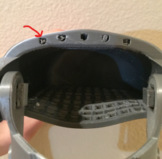

A Helping Hand
Co-Designer
My codesigner is Ty, a middle school student from California. He loves playing sports, including football and basketball. In addition to sports, Ty has a passion for video games such as NBA 2k, a basketball video game on gaming consoles. As you can see, Ty is a normal kid with plenty of interests, but one thing that does make Ty unique is that he does not have a right hand.
Co-Designer Needs Statement
- The product needs to be able to allow Ty to flexibly hold and grab things with his right arm.
- The product needs to be durable enough for long-term use.
- The product needs to comfortably fit on Ty.
Product Requirements
- Be able to grab things efficiently
- Durable for long-term use
- Easy to use
- Comfortable to wear
- Easy to take off and put on
- Secure when put on
Initial Brainstorming Narrative
We came up with an idea of developing a prosthetic hand that would allow Ty to grasp and hold items. There already exists an open source 3D printable prosthetic hand that is very effective, however closing the fingers requires a wrist-actuated mechanism. Ty has adequate wrist mobility, but it is still to be determined if the area of his partial palm is large enough to properly use the wrist-actuated mechanism to close the hand. Therefore, we have designed a Lo-Fi prototype with the purpose of examining and measuring the mobility of Ty's wrist, the dexterity of his partial palm, and the overall fit of the device on his forearm. We've also brainstormed a few alternative mechanisms (such as EMGs or electronic joysticks) that could substitute the wrist-actuated mechanism, but these require considerable adjustments to the original open-source design. We plan to build the prosthetic hand by printing the needed components via a 3D printer and purchasing a package (which includes screws, threading, elastic bands, etc.) that the open source provider sells.
Initial Prototype
Overall Design Objective
The problem I am trying to solve is how to create a closing mechanism for a 3D printed wrist-actuated prosthetic hand.
I know when I have solved this when my co-designer is able to comfortably and efficiently use a closing mechanism.
This is under the assumption that the user already has some wrist mobility and somewhat of a partial palm.
Forearm

Palm

Assembled

Second Prototype
Prototype Design Objective
With this prototype I aim to determine if the default wrist-actuated mechanism in closing the hand is suitable for my codesigner. The wrist-actuated mechanism requires a partial palm of an appropriate size and dexterity to be effectively used. The objective of this prototype is to assess the size of my codesigner’s partial palm and wrist mobility and dexterity. If my user has the appropriate wrist mobility and partial palm size to fit inside the prototype and wear it comfortably, then I will know that the default mechanism is sufficient. If not, then I must augment the mechanism to make it sufficient.
Bill of Materials
- Cardboard
- Duct Tape
- PLA plastic (for 3D printed part)
Prototype Pictures

3D-printed palm is printed at 130% scale: 2.6 inches in width, 1.15 inches in height, 3 inches in length
Cardboard arm guard: 8 inches (at highest point) and 6 inches (at lowest point) in height, 6.375 inches in width
Not included in picture: Wrist Width (2.12 in, 5.33 cm), Partial Palm Width (2.2 in, 5.875 cm)
Test Plan
Take measurements of
- Forearm Length
- Partial Palm Length
- Partial Palm Width
- Partial Palm Height
- Wrist Circumference
- Wrist Width
- Forearm Circumference
Test the mobility and comfortability of the Lo-Fi prototype.
- Ask codesigner to move wrist and partial palm up and down while wearing the 3D printed palm
- High angle to medium angle
- Repeat 7-10 times each for total of 3 sets
- Medium angle to low angle
- Repeat 7-10 times each for total of 3 sets
- High angle to low angle
- Repeat 7-10 times each for total of 3 sets
- Ask co-designer which degree of movement was most comfortable
High, medium, and low angle
- Ask codesigner to rotate wrist in clockwise and counterclockwise direction and move partial palm again
- Repeat 3 times
Use modelling clay to increase the size of the codesigner's partial palm for the 3D printed palm (if needed).
Ask the codesigner to wear a lofi prototype and give feedback.
- Breathibality: Does wearing the prototype make the arm too hot? Will sweat and moisture be an issue?
- Durability: Is the PLA plastic of the palm a suitable material? How often do you plan to use this outdoors?
Test Pictures

Test Results
The result of our tests included the following
- Measurements (± 0.375 in, ± 1 cm)
- Forearm Length: 9 in, 22 cm
- Partial Palm Length: 1.25 in, 4 cm
- Partial Palm Width: 2.2 in, 5.875 cm
- Partial Palm Height: ~ 1.25 in, 3.175 cm
- Wrist Circumference: 6.75 in, 17 cm
- Wrist Width: 2.12 in, 5.33 cm
- Forearm Circumference: 6.75 in, 17cm
- Ty has adequate wrist mobility and a large enough partial palm to proficiently use the default closing mechanism, thus we will plan to print the entire 3D hand without adjustment to the closing mechanism.
- The cardboard armguard was a bit faulty and unnecessary for our test, so for our test run we removed the cardboard armguard and only used the 3D printed palm
- The 3D printed palm (printed at 130% scale), was a bit too small for Ty. Thus in an effort to increase space for the partial palm to fit, we soaked the hand in warm water and manipulated the opening of the palm to have more space. This caused the palm to crack a bit on its right side (with the opening of the palm facing towards you).
- The end of Ty’s partial palm has a larger width than the wrist area, thus the hand should accommodate for that.
- Since the palm was too small, when Ty would bend his wrist it dug into his skin and caused some discomfort.
- We discussed a bit about possible breathability issues that may occur.
- Sweating and poor breathability may increase discomfort
- Ty felt that it was most comfortable for his wrist to go from a high angle to a medium flat angle. Thus, we decided that the wrist-actuated closing mechanism will mimic this same movement.
- Ty had comfort and good mobility when rotating his wrist in the clockwise and counterclockwise direction.
Prototype Conclusions
The default wrist-actuated closing mechanism proved to be a success. Ty has the adequate wrist mobility and partial palm size to be able to use it effectively. Since printing the 3D model scaled at 130% is too small, the next plan is to print it at 155%. We also discussed possibly making material alterations to increase comfort and breathability of the design. I hope to print and bring an entire assembled 3D printed hand made of PLA to Ty for the next iteration.
Final Prototype
Bill of Materials
- e-NABLE Phoenix Hand v3 CAD Files (Free)
- PLA 3D Printing Filament ($19.99)
- e-NABLE Phoenix Hand v3 Assembly Material Kit ($30.00)
Technical Drawing
Right Hand Palm
Arm Guard
Distals and Proximals
Snap Pins with Labels
Thermo Forming Jig
Tensioner Pins and Blocks
Build Instructions
Important Note
Tensioner pins were printed at 150 - 155% to scale and the screws were not able to fit properly so as to create their own threading. My advice would be to keep the scale of the tensioner pins at 100%, and scale the rest of the hand at the appropriate scale.
Additionally, when 3D printing the arm guard you want to ensure that there are no supports covering the holes that the tendon strings go through.

Red arrow shows supports blocking the holes of the palm that the tendon lines would go through, you want this area to be cleared of any blockage.
Measurements
The most important sizing measurements are the measurements of the user’s partial palm width at its widest point and height at its highest point.
Scaling
Scale the device such that the narrowest point of the hand is a bit larger than the width of the user’s partial palm.
Soak the palm portion of the hand in hot water so that the bottom is more malleable to increase the height of the hand to accommodate for the height of the partial palm.
Dimensions of Partial Palm @ 150% to scale
- Palm widest point: 81.5 mm
- Palm at narrowest point: 60 mm
Phoenix Hand v3 Assemble Video
Test Plan
Questions to assess comfortability (qualitative subjective feedback)
- Can you describe the sizing of the hand?
- Can you describe the extent of strain applied to the wrist at a resting position?
- Can you describe the difficulty needed to push the palm down to close the fingers?
- Can you give feedback on how you like the default position of the fingers of the hand?
Inform user of important factors to consider:
- Ensure that the wrist caps are attached appropriately to the arm guard.
- Make sure that the hand is not placed in a hot temperature (except when wanting to make it more malleable), such as inside cars during a hot summer day.
- Tighten the “tendon” strings connecting the fingers to the arm guard whenever the fingers become too loose and don’t bend as far.
Results

Ty found that the default design was comfortable and really liked the design. His palm was able to fit in the palm component of the hand and the arm guard fit snugly onto his forearm with velcro.
He was also able to open and close the fingers of the hand efficiently without severe strain on his palm and wrist. We assessed the hand’s ability to grasp and hold unto things by having Ty pick up and hold cups.
Since the hand was printed at 155% to scale, the tensioner pins became too large for the screws to create their own threading.
Tensioner pin printed at 155% scale, with loose screw placed inside opening.
As a result, the strings connecting the fingers to the arm guard had to be wired in a different fashion.
All the drawn lines represent tendon strings that connect the fingers to the arm guard. Different colors represent different tendon strings.
First: Original Tendon Wiring Schematic, Second: Adjusted Tendon Wiring Design

The string had to be anchored to the velcro holes of the arm guard.
The rewiring of the tendon strings resulted in the default position of the hand’s fingers to be partly closed, and Ty was unable to extend the fingers fully because it required his palm and wrist to be at a high angle relative to the arm guard.
The adjusted tendon wiring schematic also makes it difficult to adjust the tension of the tendon strings connected to the fingers. Prolonged use of the hand may slowly loosen the tension of the tendon strings and decrease the angle at which the fingers close. To resolve this, the user would have to retie the tendon strings in the finger and ensure there is enough tension within the string. This, however, can become a nuisance as tendon strings are not very easy to untie and retie again.
Future Improvements
Ty gave feedback that the default design and sizing the hand at 155% works well.
Improvements:
- Since Ty is a middle school student he’ll grow out of that hand pretty fast, so adjusting the size of the next iteration is necessary.
- Readjust the sizing of the tensioning pins to allow for the original tendon wiring schematic, thus allowing him to fully extend his fingers.
- Improving comfortability
- Adding cushioning
- Including a compression sleeve to could be put on prior to using the hand
- Developing hand and its components with new material (aluminum, rubber o-rings, etc.)
- PLA plastic is not very durable for long-term use and can deform when subject to hot temperatures
- Improve the tendon string wiring schematic to allow for easy adjustment of the string’s tension
Scalability
The product is suitable for anyone with a partial palm and adequate wrist dexterity. With those constraints in mind, the product can be suitable for a diverse group of users since it’s function is to grab and hold things. This can be useful for many, but it may not effectively perform specific actions, such as picking up and writing with a pencil.
Design Process Reflection
In the prototyping phase I wish I would’ve created more detailed design documents. Although there were existing documents and files, creating my own design documents would help me better understand my product and give me more insights on possible things of the product that could be improved. Additionally, I wish I would’ve documented my personal experience, my mental roadblocks, ideas, and emotions as I could increase my introspection as I went through the design process.